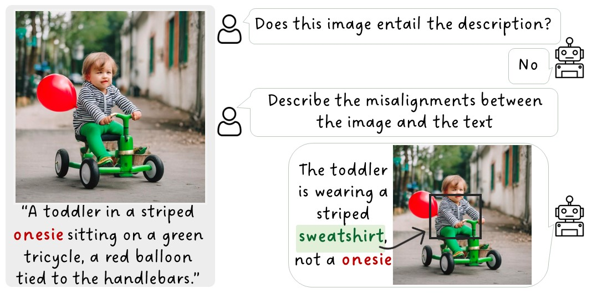
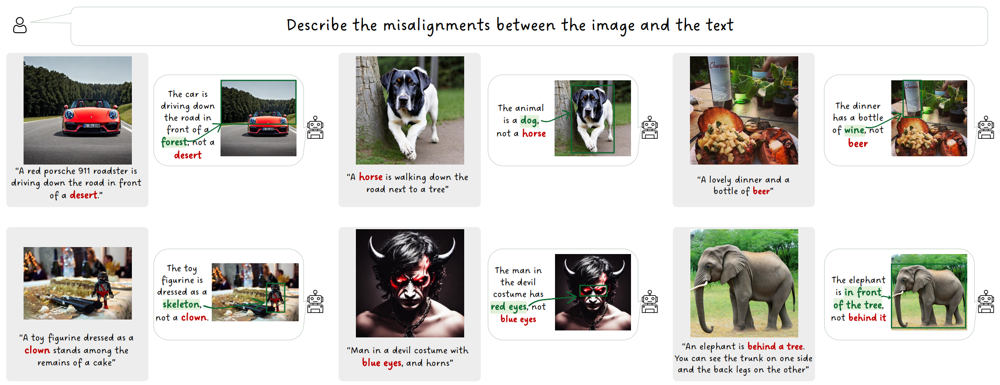
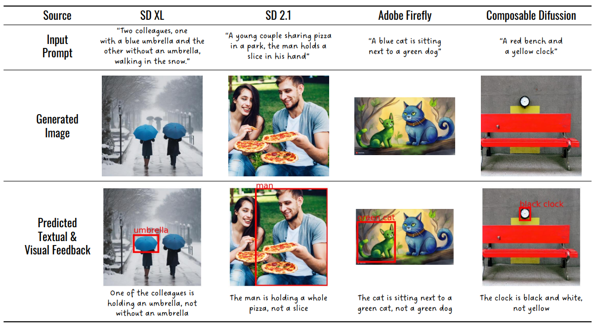
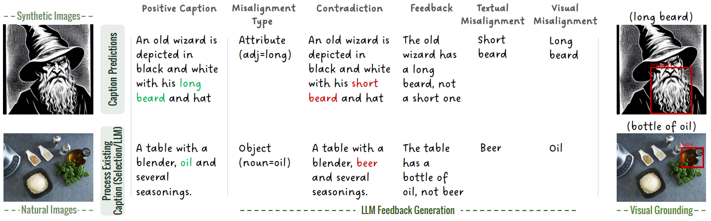
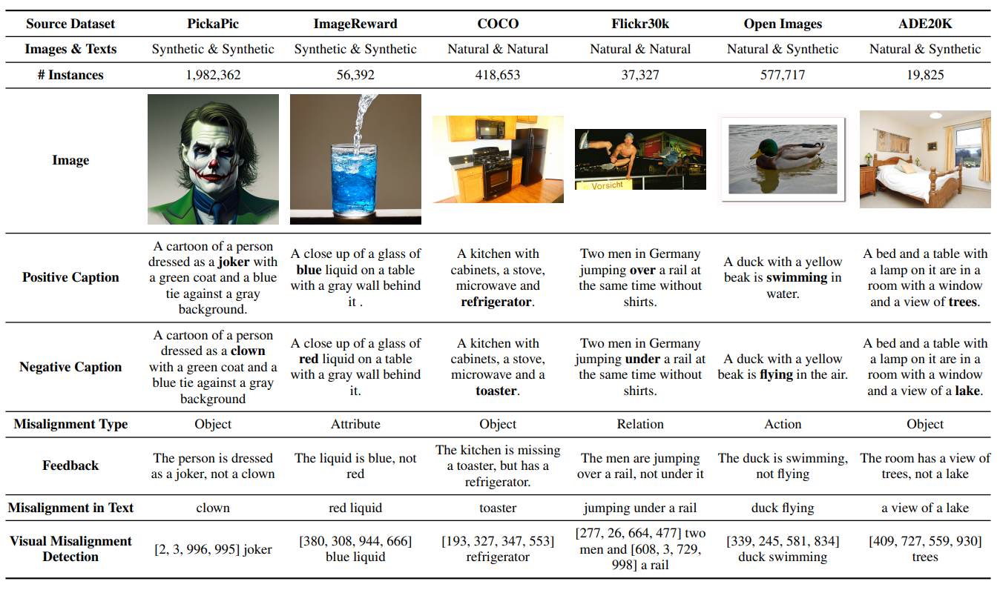
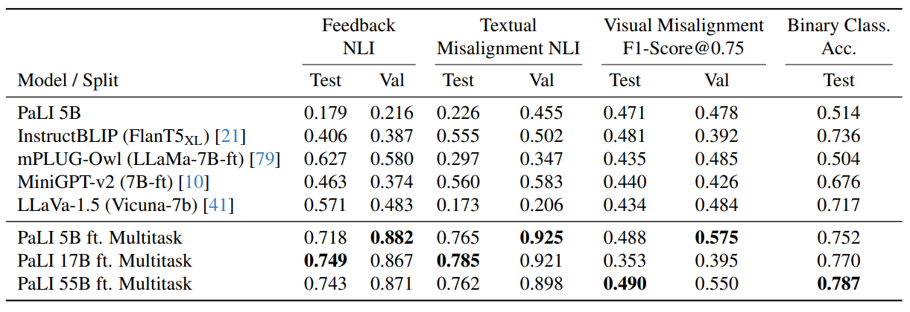

While existing image-text alignment models reach high quality binary assessments, they fall short of pinpointing the exact source of misalignment.
In this paper, we present a method to provide detailed textual and visual explanation of detected misalignments between text-image pairs. We leverage large language models and visual grounding models to automatically construct a training set that holds plausible misaligned captions for a given image and corresponding textual explanations and visual indicators. We also publish a new human curated test set comprising ground-truth textual and visual misalignment annotations.
Empirical results show that fine-tuning vision language models on our training set enables them to articulate misalignments and visually indicate them within images, outperforming strong baselines both on the binary alignment classification and the explanation generation tasks.
Our fine-tuned model results on our generated training data. Please note the precision of our produced Textual-Visual feedback, which includes: a concise explanation of the misalignment, a misalignment cue that pinpoints the contradictory source in the caption, and a labeled bounding box.

We evaluate our model’s generalization capabilities on ‘in-the-wild’ Text-to-Image (T2I) generations from , created using Adobe Firefly, Composable Diffusion, and Stable Diffusion versions 1.0 and 2.1.

For each aligned image/caption pair we define a misalignment category (object , attribute, action, or spatial relations).
Per chosen misalignment candidate, we instruct PaLM 2 API with few-shot prompts to automatically generate: (a) a contradiction caption that introduces the target misalignment; (b) a detailed explanation of the contradiction; (c) a misalignment cue that pinpoints the contradictory element in the caption; and (d) a label for the visual bounding box to be placed on the image.
To create the bounding-box misalignment, we employ GroundingDINO, which takes the textual label from PaLM 2's output and places a bounding box around the corresponding element in the image.

We compile a set of over a million positive image-text pairs, consisting of synthetic and natural images. Approximately 65\% of our examples consist of synthetic and real images, from PickaPic, ImageReward, Flickr30k, COCO , OpenImages and ADE20K.
Using our ConGen-Feedback method, we generated our training dataset to fine-tune PaLI model to predict a full Textual-Visual feedback.

The Textual-Visual feedback results on SeeTRUE-Feedback (Test split) and TV-Feedback dataset (Val split). Overall, the PaLI models fine tuned on TV-Feedback dataset outperform the baselines on all metrics.
For example, Non-PaLI models achieved Feedback NLI scores from 0.406 to 0.627, while PaLI models reached 0.718 to 0.749.
The largest, 55B PaLI model achieved the highest performance on the binary alignment classification task. Surprisingly, it underperformed the smaller PaLI models on most feedback generation tasks.
Specifically, the smaller PaLI 5B is best performing on the in-distribution testset, but less so on the out-of-distribution examples.

TODO